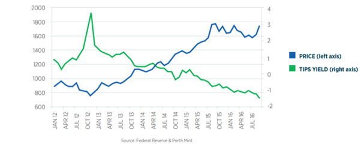

Abstract:
This study introduces the gold market trend in 2022 and provides analysis provided with historical evidence. It focuses on the key and newly launched gold products in the gold market and put themselves in the context of the main exchanges in different regions. By observing the seasonal change in gold prices, the study introduces two short-term trading strategies by catching the average monthly return and the moving average crossover. By analyzing the reverse relation between the gold prices and other macroeconomic factors, the study introduces the long-term trading strategies.
Content:
- 4.1 Futures and Options Exchanges
- 4.2 ETFs Exchanges
5. Typical gold trading strategies
- 5.1 Short-term trading strategies: Buy Gold in the trading months with above average return
- 5.2 Short-term trading strategies: Moving average crossover
- 5.3 Long-term trading strategies: Inverse relation between gold price and US real rate
1. Introduction
Based on the characteristics of gold, its price usually has a negative relationship with USD, which can be regarded as an ideal financial instrument to hedge currency risk and inflation risk by domestic retail investors and foreign investors. Investors can use a variety of instruments to invest in the performance of gold, among which gold futures (including financial instruments based on gold futures) and exchange-traded products (ETPs) based on physical gold are used most often. Different exchanges are holding different kinds of gold products, allowing traders to take different strategies. Focusing on market patterns, both short-term and long-term trading strategies can create value for investors.
2. 2022 Gold Market Trend
Since 2008, the prices of real estate and physical assets like gold skyrocketed. Investors thus usually own gold to hedge against the risks of USD depreciation and the resulted inflation: if you own gold that is priced by USD, then USD depreciation leads to rise in cost of gold in dollar, so that gold price increases.
Figure 1: Gold Price Trend (5Y)
Source: TradingEconomyFrom the gold price change in 2022, we see the price has not fallen below 1600 once, which fully shows gold's stable and less correlated performance amid market turbulence. Inflation and geopolitics led to weak institutional demand (ETFs/OTC/Futures) yet was offset by other buying forces.
First, retail investment. Despite the institutional malaise and heightened geopolitical risk, retail investors had an eight-year high ytd demand in gold in Q3 2022 - they bought almost 400 tons of gold altogether. Particularly for non-US investors, gold proved a lucrative investment in 2022, gaining well in their local currencies. Second, central banks had an exceptional year of net buying. Central banks are scooping up gold at the fastest pace since 1967, buying 50 tons of gold in November, up 47% month-to-month. Data compiled by the World Gold Council (WGC) has shown demand for the precious metal has outstripped any annual amount in the past 55 years.
Figure 2: Central Banks Gold Buy or Sell in Nov 2022
 Source: Financialpost.com
Source: Financialpost.com
Gold held above $1,900 an ounce in the end of 2022, hovering near its strongest level since the firm expectations that the fed will slow the pace of its interest rate hikes: After delivering a 50- bps increase in the fed rate December, the market is currently expecting the fed to downshift to a smaller 25-bps rate hike in February. Consumer prices in the UK also fell for the second straight month in December, adding to further signs that inflationary pressures may have finally peaked, so in early 2023 gold price may increase as well.
3. Gold Products
The positive performance of the gold index is prompting investors to add gold to their portfolios, as a hedge against volatile stock returns, high inflation, and lagging economic growth. Investors can use a variety of instruments to invest in the performance of gold, such as gold bars, mining stocks and derivative-based financial products.
Two gold investment vehicles more commonly used by professional investors are gold futures (including financial instruments based on gold futures) and exchange-traded products (ETPs) based on physical gold.
3.1 ETPs
Gold ETPs were created in the early 2000s to combine the liquidity and tradability characteristics of stocks or mutual funds with the attractive store of value and diversification characteristics of physical gold. The gold tracked by physical gold ETPs is held in vaults by custodians on behalf of investors.
ETPs can be bought and sold in the same way as stocks, and as easy to execute and manage. Each ETP is backed by an allotment of physical gold and offers ordinary investment in gold prices. In a sense, when investors buy ETP, they are paying to have someone else manage their physical gold investment.
The custody of gold ETP is highly concentrated, and investors should understand the relevant counterparty risks. In most cases, investors are required to pay the full amount invested in the gold ETP.
3.2 Derivative-based instruments
Derivative-based financial instruments are another tool for investing in the performance of gold, often referred to as gold derivative investments. The most common instruments are gold futures contracts, ETPs based on gold index futures and indices, or swaps based on derivative gold indices.
The futures market provides an efficient price-setting mechanism for market participants in a highly regulated market environment. Futures are highly liquid and offer standardized contracts, attracting investment from a wide range of participants, such as hedgers and speculators. As far as gold is concerned, the volume of gold traded on exchanges or over-the-counter dwarfs that of ETPs. The price of gold futures contracts is determined by many participants, while 15 financial institutions participate in ETP to determine the LMBA gold price.
A major advantage of investing in gold through the futures market is that there is very little counterparty risk; gold futures are traded and settled on well-established and well-regulated futures exchanges, and buyers and sellers do not meet in the transaction.
Investing in commodities using commodity futures typically does not require the full amount invested and therefore may be more capital efficient. Investors or asset managers will use a relatively large proportion of their allocated assets to buy Treasuries and other fixed-income instruments, thereby providing collateral for futures contracts.
4.Gold Exchanges
Gold is used to make jewelry and coins. It is also used in electronics, dentistry, decorative and industrial fabrication. Customers can walk into any jewelry stores or banks for gold accessories and gold bars. Instead of physical gold, investors with hedging and speculative purposes turn attention to gold forwards and futures.
The market for gold consists of a physical gold market where bullion is transferred between market agents and a paper gold market which is traded in claims of physical stocks. Bullion markets serves as a bridge between larger suppliers (producers and central banks) and investors and fabricators. Paper gold market consists of many paper gold instruments such as gold futures, gold options, gold warrants, gold Exchange Traded Funds (ETFs) and other contracts. Some of the gold products are introduced detailed in the above section. Since most of the instruments in paper gold market are liquid and standardized, they are usually traded within exchanges around the world. Gold futures are usually traded on the commodity exchange or over the counter. ETFs are usually traded on the stock exchange. For example, in India, gold futures contracts were introduced on Multi-Commodity Exchange of India (MCX) owing to the heightened volatility observed in gold prices. These contracts are drafted to cater to the hedging and investment needs of market participants such as importers, exporters, jewelry manufacturers and investors. And the idea of gold ETFs was first introduced by Benchmark Asset Management Company in India in 2002. There are 27 gold ETFs listed in the National Stock Exchange.
In Figure 3, 'Volumes' represent daily averages in US$ billion over each corresponding period. Data for physical gold contracts on the Shanghai Gold Exchange are reported with a time lag.
Figure 3: Trading Volumes
* Indicates non-available current data. Last available figures are used instead for reference onlySource: Bloomberg, COMEX, Dubai Gold & Commodities Exchange, ICE Benchmark Administration, London Metal Exchange, Multi Commodity Exchange of India, Nasdaq, Shanghai Gold Exchange, Shanghai Futures Exchange, Tokyo Commodities Exchange, World Gold Council; 4.1 Futures and Options Exchanges
4.1 Futures and Options Exchanges
The first gold futures contract was launched at the Winnipeg Commodity Exchange in 1972. Soon after, when the ban of purchasing and holding gold by U.S. residents was lifted on December 31, 1974, five exchanges (two in New York and three in Chicago) began to trade gold futures in the United States. The Commodity Exchange of New York (COMEX) has since come to dominate the market in gold futures almost completely.
4.1.1 Loco London
Governed by LBMA and running 24 hours a day through London, the London Bullion Market - as it's known to its members - provides flexibility in pricing, size of deals and length of contract. It also maintains confidentiality and ensures that all risks exist only between the two counterparties. LBMA's gold price is regarded as global benchmark.
4.1.2 COMEX
Both futures and options contracts are quoted in U.S. dollars an ounce, with a contract size of 100 ounces (995 fineness), and a tick size of $0.1 an ounce (or $10 a contract).
The membership of the Commodity Exchange falls into three categories: (1) floor members who trade for other members as agents; (2) market-makers (or "locals") who trade for themselves as principals; and (3) commission houses that execute trades for the public.
4.1.3 Shanghai Futures Exchange
The supply of gold in the world gold market is from: the mineral gold of the gold-producing countries; regeneration of gold; gold sold officially, e.g., gold sold by People's Bank of China or International Monetary Fund.
The demand for gold consists of consumer demand, reserve demand, and investment demand.
4.1.4 Relations and Comparison between the Exchanges
This is a historical comparison in 1989.
Figure 4: Active Gold Futures and Options Contracts in 1989

4.2 ETFs Exchanges
When selecting gold ETFs, we will usually compare the fund and the products. Some gold ETFs outperform the others because each fund has their unique investment strategies. For example, some ETFs focused on the physical gold while the others focus on the gold futures and gold forwards. Some are actively managed, and some are passively managed. Additionally, gold ETFs can be benchmarked against other indexes. For example, some ETFs are benchmarked against AUX index or US Global Go Gold index. If the ETF outperforms or underperforms the benchmark index, the comparison will be reflected on its price. In this section, we ignore the difference between the single products. We focus on the ETF Exchanges and especially in North America, Europe and Asia where large volume of gold ETFs are traded every da
4.2.1 United States
Not all stock exchanges in the US have gold ETFs, but many do. The Nasdaq, NYSE, and OTC exchanges all have gold ETFs. These ETFs can track the spot price of gold, a gold index, or a basket of gold-related stocks. Additionally, there are ETFs that invest in physical gold, such as the SPDR Gold Trust (GLD).
4.2.2 Europe
There are over 30 stock exchanges in Europe. The largest and most well-known exchanges are the London Stock Exchange, Euronext, the Deutsche Börse, and the Borsa Italiana. Additionally, there are several smaller exchanges in countries such as Denmark, Finland, Norway, and Sweden.
4.2.3 Asia
In China, gold ETFs are offered by a number of exchanges, including the Shanghai Stock Exchange and the Shenzhen Stock Exchange. In Hong Kong, gold ETFs are offered by a number of exchanges, including the Hong Kong Stock Exchange and the Shanghai-Hong Kong Stock Connect.
In Tokyo, gold ETFs are offered by a number of exchanges, including the Tokyo Stock Exchange and the Nikkei Stock Exchange.
In India, gold ETFs are offered by a number of exchanges, including the National Stock Exchange of India and the Bombay Stock Exchange.
The gold ETFs' prices will also be affected by geography. For example, gold ETFs that are traded on the London Stock Exchange may have different prices compared to gold ETFs that are traded on the New York Stock Exchange, due to differences in the local supply and demand for gold in those markets. Additionally, gold ETFs that are traded in different currencies, such as the US Dollar or the Euro, may also have different prices, due to differences in the exchange rates.
5. Typical gold trading strategies
5.1 Short-term trading strategies: Buy Gold in the trading months with above average return
The price of gold tends to follow a seasonal pattern.
Figure 5: Gold's average monthly return since 1973
Source: HulbertRatingWe can see that Gold has traded below the 0.618 Fibonacci retracement of the previous market swing. But this action happened and we can see that gold price started picking up right from the start of January 2018.
If the price of Gold at the time of your analysis is trading at support you can go ahead and buy it. However, if the market starts rallying before we enter into January, wait until we break above previous resistance to buy gold.
As you can see the actual gold price followed its seasonality cycle.
Figure 6: Seasonal cycle of gold price
Source: HulbertRating5.2 Short-term trading strategies: Moving average crossover
Moving average crossover strategy: A trader would look to buy gold if a shorter-term moving average above a longer-term moving average and sell when the shorter-term moving average crosses below the longer-term average.
Figure 7: Moving average crossover
Source: FOREX5.3 Long-term trading strategies: Inverse relation between gold price and US real rate
Longer-term position traders and investors can focus more on the fundamentals driving gold's price, such as the level of real interest rates. The chart below shows the relationship between gold prices and the yield on TIPS, a proxy for real interest rates in the United State.
Figure 8: Gold price vs TIPS yield since 2008
 Source: Federal Reserve &Perth Mint